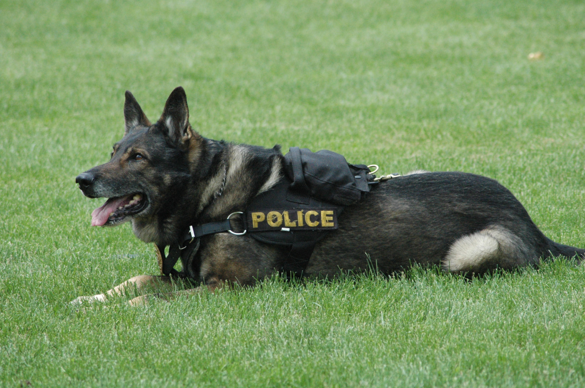

Hero Hounds Sanctuary provides an exceptional rehabilitation service tailored specifically for retired K-9 dogs. These services are designed to cater to the unique needs of these canine heroes, who often retire with physical and psychological challenges due to their demanding careers in law enforcement and service roles. The rehabilitation program at Hero Hounds focuses on both physical and emotional healing. Physically, the sanctuary offers specialized veterinary care, including treatments for injuries, joint care for arthritis, and other age-related conditions. There's also a focus on maintaining a healthy weight and mobility through a balanced diet and gentle exercise routines. Emotionally, the sanctuary emphasizes creating a calm, nurturing environment to help these dogs transition from their working life to retirement. This includes providing ample space for rest and relaxation, socialization opportunities with other dogs, and lots of human interaction to ensure they receive the love and attention they deserve. The staff and volunteers at Hero Hounds are trained to understand the unique experiences and triggers these retired K-9s may have, allowing them to offer tailored emotional support. Additionally, activities like gentle play, exploration in safe outdoor spaces, and cognitive games help in maintaining their mental stimulation and overall well-being. By offering these comprehensive rehabilitation services, Hero Hounds Sanctuary ensures that these retired K-9 heroes receive the highest level of care and support, helping them to enjoy a peaceful, fulfilling retirement.
